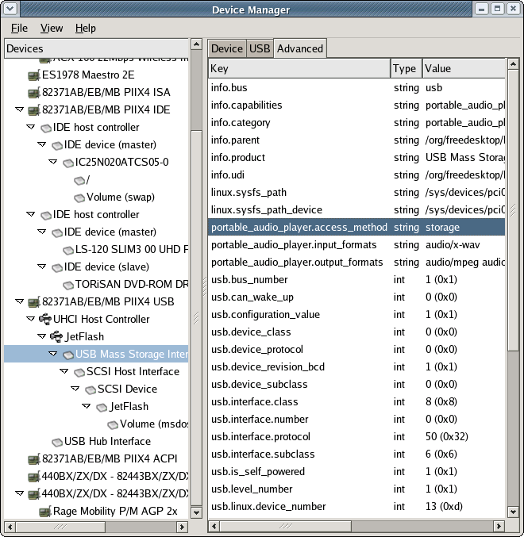
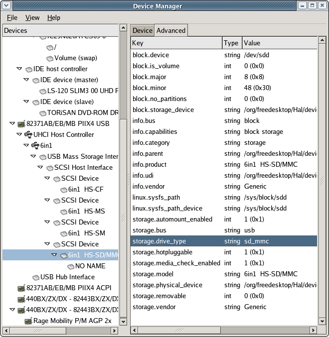

Introduction
About
This document concerns the specification of HAL which is a piece of software that provides a view of the various hardware attached to a system. In addition to this, HAL keeps detailed metadata for each piece of hardware and provide hooks such that system- and desktop-level software can react to changes in the hardware configuration in order to maintain system policy.
HAL represents a piece of hardware as a device object. A device object is identified by a unique identifer and carries a set of key/value paris referred to as device properties. Some properties are derived from the actual hardware, some are merged from device information files and some are related to the actual device configuration. This document specifies the set of device properties and gives them well-defined meaning. This enable system and desktop level components to distinguish between the different device objects and discover and configure devices based on these properties.
HAL provides an easy-to-use API through D-BUS which is an IPC framework that, among other things, provides a system-wide message-bus that allows applications to talk to one another. Specifically, D-BUS provides asynchronous notification such that HAL can notify other peers on the message-bus when devices are added and removed as well as when properties on a device are changing.
The most important goal of HAL is to provide plug-and-play facilities for UNIX-like desktops with focus on providing a rich and extensible description of device characteristics and features. HAL has no other major dependencies apart from D-BUS which, given sufficient infrastructure, allows it to be implemented on many UNIX-like systems. The major focus, initially, is systems running the Linux 2.6 series kernels.
Acknowledgements
Havoc Pennington's article ''Making Hardware Just Work'' motivated this work. The specification and software would not exist without all the useful ideas, suggestions, comments and patches from the Free Desktop and HAL mailing lists.
All trademarks mentioned belong to their respective owners.
Overview
Architecture of HAL
The HAL consists of a number of components as outlined in the diagram below. Note that this diagram is high-level and doesn't capture implementation details.

Details on each component
HAL daemon
A system-wide daemon that maintains a persistent database of device objects. The daemon is also responsible for merging information from the device information file repository and managing the life cycle of device objects. The HAL daemon also contains detection and monitoring code for buses (such as PCI and USB buses) and devices (such as networking and storage devices). The HAL daemon notifies system level components through callouts and session level components using the D-BUS interface.
Applications
This represents the end consumers of the HAL and comprises both applications that need to search for a device, but also (existing) device specific libraries and/or services that provide access to devices. Specifically, the application or device library can obtain the ''address'' (the special device file or other details), of the device through HAL, to interact with the device through the kernel as usual.
In addition, this group include desktop environments such as GNOME or KDE. Specifically, using HAL, desktop environments may include session-level daemons enforcing certain policies when the device database managed by the HAL daemon changes. Such policies may include starting a photo management application when a camera is plugged in, assisting the user in finding driver software and device information files for a new device, displaying link status information about network devices, mounting removable storage and so on.
Note that several desktop sessions may be active on the same system; it is the responsibility of session-level software to arbitrate the device access between sessions.
Callouts
Callouts are programs invoked when the device object list is modified or when a device property changes. As such, callouts can be used to maintain system-wide policy (that may be specific to the particular OS) such as changing permissions on device nodes, updating the systemwide /etc/fstab file or configuring the networking subsystem.
The HAL uses D-BUS to provide a ''network API'' to applications. As D-BUS is designed to be language independent, potentially many languages / runtime systems will be able to easily access the services offered by HAL. The D-BUS API is detailed in the chapter called D-BUS Network API. Note that HAL doesn't enforce any policy at all, this is left for desktop environments and operating systems vendors to implement. However, to ensure interoperability between operating systems and desktop environments, recommendations and best practises on how to enforce policy is discussed in the chapter called Enforcing Policy.
HAL on Linux 2.6
On a Linux 2.6 system HAL is implemented as shown in the diagram below:

Highlights
HAL depends on the udev and linux-hotplug packages
The diagram shows an example callout program, update-fstab.sh, that creates/destroys mount points and modifies the /etc/fstab file accordingly whenever storage devices are added or removed.
A session-level daemon, *-volume-manager, for mounting storage devices is shown. This piece of software depends on a properly updated /etc/fstab file and a setuid mount(1) binary that allows an unprivileged user to mount devices marked with option user in the /etc/fstab file.
The update-fstab.sh and *-volume-manager programs are only examples on how to enforce policy and are not part of HAL proper. An OS vendor may choose to enforce policy in a different way e.g. he might want to ignore the /etc/fstab file and mount storage volumes in the callout or run a daemon with sufficient privileges. See the chapter called Enforcing Policy for more details.
Device Objects
It is important to precisely define the term HAL device object. It's actually a bit blurry to define in general, it includes what most UNIX-like systems consider first class objects when it comes to hardware. In particular, a device object should represent the smallest unit of addressable hardware. This means there can be a one-to-many relationship between a physical device and the device objects exported by HAL. Specifically, a multi-function printer, which appear to users as a single device may show up as several device objects; e.g. one HAL device object for each of the printing, scanning, fax and storage interfaces. Conversely, some devices may be implemented such that the HAL device object represent several functional interfaces. HAL is not concerned with this duality of either one-to-many or many-to-one relationships between device objects and the actual iron constituting what users normally understand as a single piece of hardware; a device object represents the smallest addressable unit.
Device objects in HAL are organised on a by-connection basis, e.g. for a given device object X it is possible to find the device object Y where X is attached to Y. This gives structure to the device database of HAL; it is possible to map the devices out in a tree. Further, software emulation devices exported by a kernel, such as SCSI emulation for USB Storage Devices, are also considered device objects in HAL. This implies that kernel specific bits leak into the device object database. However users of HAL won't notice, such device objects are not referenced anywhere in the device objects that users are interested in; they are merely used as glue to build the device tree.
In addition to provide information about what kind of hardware a device object represents (such as a PCI or USB device) and how to address it, HAL merges information about the functional interfaces the OS kernel provides in order to use the device; in most cases this is represented on the device object as a string property with the name of the special device file in /dev. In addition to the special device file, a number of other useful properties are merged. This means that both hardware and functional properties are on the same device object, which is very useful for an application programmer. For example, an application might query HAL for the device object that exports the special device file /dev/input/mouse2 and learn that this is provide by an USB mouse from a certain manufacturer by checking the properties that export the USB vendor and product identifiers. See the chapter called Device Capabilities and the chapter called Device Properties for details.
On a formal level, a device object is comprised by
UDI
This is an identifier, the Unique Device Identifer, that is unique for a device object - that is, no other device object can have the same UDI at the same time. The UDI is computed using bus-specific information and is meant to be unique across device insertions and independent of the physical port or slot the device may be plugged into.
Properties
Each device object got a set of properties which are key/value pairs. The key is an ASCII string while the value can be one of several types
string - UTF8 string
int - 32-bit signed integer
uint64 - 64-bit unsigned integer
bool - truth value
double - IEEE754 double precision floating point number
Properties of a device object carry all the important information about a device object. For organisational reasons properties are also namespaced using ''.'' as a separator.
It can be useful to classify properties into three groups
Metadata - Information about how the devices are connected with respect to each other (parent/child relationships), what kind of device it is, what functionality it provides etc.
Device specific information - vendor ID, product ID, disk serial numbers, number of buttons on a mouse, formats accepted by a mp3 player and so on.
Usage specific information - Network link status, special device file name, filesystem mount location etc.
The first category is determined by HAL, the next is merged from either the hardware itself or device information files and the last is intercepted by monitoring the operating system. This specification is concerned with precisely defining several properties; see the chapter called Device Properties and onwards for more information. As a complement to device properties, HAL also provides conditions on HAL device objects. Conditions are used to relay events that are happening on devices which are not easily expressed in properties. This includes events such as ''processor is overheating'' or ''block device unmounted''.
The fundamental idea about HAL is that all ''interesting'' information about hardware that a desktop application needs, can be obtained by querying HAL. Below is a screenshot of a simple device manager application shipped with HAL called hal-device-manager. This application is communicating with the HAL daemon and displays the tree of device objects. The shown properties are for a device object representing a harddisk.

Device Capabilities
Mainstream hardware isn't very good at reporting what they are, they only report, at best, how to interact with them. This is a problem; many devices, such as MP3 players or digital still cameras, appear to the operating system as plain USB Mass Storage devices when they in fact are a lot more than just that. The core of the problem is that without external metadata, the operating system and desktop environment will present it to the user as just e.g. a mass storage device.
As HAL is concerned with merging of external metadata, through e.g. device information files, there needs to be some scheme on how to record what the device actually is. This is achieved by two textual properties, info.category and info.capabilities. The former describes what the device is (as a single alphanumeric keyword) and the latter describes what the device does (as a number of alphanumeric keywords separated by whitespace). The keywords available for use is defined in this document; we'll refer to them in following simply as capabilities.
HAL itself, assigns capabilities on device detection time by inspecting the device class (if available, it depends on the bus type) and looking at information from the operating system (most OS'es have a concept of device classes). At this time the category is also determined by selecting the most prominent capability. However, both capabilities and category can be overridden by either device information files or callouts. This gives maximum flexibility, while maintaining a base level of capability detection.
The idea of HAL is that existing device capability specific libraries (such as libghoto2), would advertise what kind of HAL capabilities they are able to handle. As this happens over time, this specification will grow to precisely define what a device with a given capability is supposed to do and what library, or service, the application programmer can use to access the device.
Having a capability also means that part of the property namespace, prefixed with the capability name, will be populated with more specific information about the capability. Indeed, some properties may even be required such that applications and device libraries have something to expect. For instance, the capability for being a MP3 player may require properties defining what audio formats the device support, whether it support recording of audio, and how to interact with the device. For example, the latter may specify ''USB Storage Device'' or ''proprietary protocol, use libfooplayer''.
Just as device objects can appear and disappear at any time (e.g. when a device is plugged in respectively removed), capabilities can also appear and disappear - one example of this happening is when device drivers are loaded and unloaded.
Finally, capabilities have an inheritance scheme, e.g. if a device has a capability foo.bar, it must also have the capability foo.
Using devices
While the HAL daemon provides generic operations that apply to all devices (though some may be no-ops), HAL is not concerned with providing non-generic device operations. Specifically, one goal of HAL is to integrate with existing and future libraries that target a specific class of devices such as cameras or mp3 players.
For instance, libgphoto2 could be extended such that the application programmer can simply pass the UDI of the camera he wishes to interact with and libghoto2 would then, via D-BUS, acquire the bus-specific information required, the address so to speak, from the HAL daemon, and then interact directly with the hardware.
Another option is to use the existing API of the device library to discover devices (the library would be using HAL under the hood) and provide a function to retrieve the HAL UDI of the device. When the library is built without HAL support this function returns NULL, however, when the UDI is available, then applications using the library can use the UDI both as stable reference to the device and also to extract more information directly from the HAL daemon.
Device Properties
Properties are arranged in a namespaces using ''.'' as a separator and are key/value pairs. The value may assume different types; currently int32, double, bool and UTF8 strings are supported. The key of a property is always an ASCII string without any whitespace. The properties are updated in real-time.
Metadata Properties
The section represents properties that aren't tied to either physical or functional characteristics of what the device object represents.
info namespace
The info namespace contain properties that can be considered metadata about device objects. These properties are always available.
| Key (type) | Values | Mandatory | Description |
|---|---|---|---|
| info.bus (string) | pci, usb, ide_host, ide, block, usb, usbif, scsi_host, scsi | Yes | Describes what ''physical'' bus the device is connected to |
| info.udi (string) | example: /org/freedesktop/Hal/devices/pci_10ec_8139 | Yes | The HAL unique device id |
| info.persistent (bool) | No, but required if info.not_available is set to TRUE | If this property is set, the device will remain in the the GDL even if the device is unplugged | |
| info.not_available (bool) | No | The device is currently not available (it may be unplugged or powered down) | |
| info.capabilities (string) | example: block storage storage.cdrom | No | A white-space separated list of capabilities describing what the devices does |
| info.category (string) | example: storage.cdrom | No | The prominent capability describing what the device is |
| info.product (string) | examples: ''SleekKeyboard'', ''MouseMan 2003'', ''Volume'', ''LS-120 SLIM3 00 UHD Floppy'' | No | The name of the device |
| info.vendor (string) | examples: Logitch, Mustek | No | The name of the vendor of the device |
| info.parent (string) | example: /org/freedesktop/Hal/devices/ide_1_0 | Yes, for all non-root device objects | The UDI of the device object that this device object is connected to. |
| info.locked (bool) | No | If this property is available and set to TRUE it means that a process is using the device that the hal device object in question represents and no other process should attempt to use or configure the device. The lock is only advisory. | |
| info.locked.reason (string) | example: ''The optical drive is currently being used to record a CD-RW disc.'' | Only available if info.locked is set to TRUE. | A localized text suitable for UI display |
| info.locked.dbus_service (string) | example: :1.278 | Only available if info.locked is set to TRUE. | The base D-BUS service of the process holding the lock. |
linux namespace
This namespace is used to store Linux-specific metadata about the device object and is only available on Linux systems.
| Key (type) | Values | Mandatory | Description |
|---|---|---|---|
| linux.sysfs_path (string) | examples: /sys/block/sda/sda1, /sys/devices/pci0000:00/0000:00:01.0/0000:01:00.0 | Yes | A fully-qualified path into the sysfs filesystem for the physical device |
| linux.sysfs_path_device (string) | Yes | Normally this property assumes the same value as linux.sysfs_path, however for some devices it assumes an alternate location in the sysfs filesystem. It is used internally in HAL | |
| linux.driver (string) | examples: agpgart-intel, yenta_cardbus, usb, hub, usbhid | No | Name of the driver bound to this device |
| linux.kernel_devname (string) | example: usb-0000:00:07.2-1.2 | No | A name used internally in the Linux kernel to identify the device. Used internally in HAL. |
Physical Properties
In this section properties for device objects that represent physically addressable hardware is described. Availability of these depends on the value of the info.bus property. These properties are not of particular interest to application developers, instead they are useful for libraries and userspace drivers that needs to interact with the device given a UDI. Knowledge of various bus interconnect technologies is assumed for this section to be useful.
pci namespace
This namespace contains properties for device objects representing functions on devices on a PCI bus. These properties are available exactly when info.bus equals pci.
| Key (type) | Values | Mandatory | Description |
|---|---|---|---|
| pci.device_class (int) | example: 3 | Yes | Device Class |
| pci.device_subclass (int) | example: 0 | Yes | PCI Device Sub Class |
| pci.device_protocol (int) | example: 0 | Yes | Device Protocol |
| pci.product_id (int) | example: 0x4c4d | Yes | Product ID |
| pci.vendor_id (int) | example: 0x1002 | Yes | Vendor ID |
| pci.subsys_product_id (int) | example: 0x009e | Yes | Subsystem product id |
| pci.subsys_vendor_id (int) | example: 0x1028 | Yes | Subsystem vendor id |
| pci.linux.sysfs_path (string) | example: /sys/devices/pci0000:00/0000:00:01/0000:01:00.0 | Yes (only on Linux) | Equals linux.sysfs_path |
| pci.product (string) | Rage Mobility P/M AGP 2x | No | Name of the product per the PCI database |
| pci.vendor (string) | ATI Technologies Inc | No | Name of the vendor per the PCI database |
| pci.subsys_product (string) | Inspiron 7500 | No | Name of the subsystem product per the PCI database |
| pci.subsys_vendor (string) | Dell Computer Corporation | No | Name of the subsystem vendor per the PCI database |
(FIXME: Some key PCI information (bus, slot, port, function etc.) is missing here)
usb_device namespace
For device objects representing USB devices the property info.bus will be usb_device, and the following properties will be available. Note that the corresponding USB interfaces are represented by separate device objects as children.
| Key (type) | Values | Mandatory | Description |
|---|---|---|---|
| usb_device.bus_number (int) | example: 1 | Yes | The USB bus the device is attached to |
| usb_device.configuration_value (int) | example: 1 | Yes | The current configuration the USB device is in; starting from 1 |
| usb_device.num_configurations (int) | example: 1 | Yes | Number of configurations this USB device can assume |
| usb_device.device_class (int) | example: 0 | Yes | USB Device Class |
| usb_device.device_subclass (int) | example: 0 | Yes | USB Device Sub Class |
| usb_device.device_protocol (int) | example: 0 | Yes | USB Device Protocol |
| usb_device.is_self_powered (bool) | example: false | Yes | The device, in the current configuration, is self powered |
| usb_device.can_wake_up (bool) | example: true | Yes | The device, in the current configuration, can wake up |
| usb_device.max_power (int) | example: 98 | Yes | Max power drain of device, in mA |
| usb_device.num_interfaces (int) | example: 1 | Yes | Number of USB Interfaces in the current configuration |
| usb_device.num_ports (int) | example: 0 | Yes | Number of ports on a hub. Zero for non-hubs |
| usb_device.port_number (int) | example: 1 | Yes | The port number on the parent hub that the device is attached to, starting from 1 |
| usb_device.speed_bcd (int) | examples: 0x00150, 0x01200, 0x48000 | Yes | Speed of device, in Mbit/s, in BCD with two decimals |
| usb_device.version_bcd (int) | examples: 0x0100, 0x0110, 0x0200 | Yes | USB version of device in BCD with two decimals |
| usb_device.level_number (int) | example: 2 | Yes | Depth in physical USB tree, where the virtual root hub is at depth 0 |
| usb_device.linux.device_number (string) | example: 19 | Yes (only on Linux) | USB Device Number as assigned by the Linux kernel |
| usb_device.linux.parent_number (string) | example: 19 | Yes (only on Linux) | Device number of parent device as assigned by the Linux kernel |
| usb_device.linux.sysfs_path (string) | example: /sys/devices/pci0000:00/0000:00:07.2/usb1/1-1/1-1.1 | Yes (only on Linux) | Equals linux.sysfs_path |
| usb_device.product_id (int) | example: 0x3005 | Yes | USB Product ID |
| usb_device.vendor_id (int) | example: 0x04b3 | Yes | USB Vendor ID |
| usb_device.device_revision_bcd (int) | example: 0x0100 | Yes | Device Revision Number encoded in BCD with two decimals |
| usb_device.serial (string) | No | A string uniquely identifying the instance of the device; ie. it will be different for two devices of the same type. Note that the serial number is broken on some USB devices. | |
| usb_device.product (string) | example: IBM USB HUB KEYBOARD | No | Name of the product per the USB ID Database |
| usb_device.vendor (string) | example: IBM Corp. | No | Name of the vendor per the USB ID Database |
usb namespace
Device objects that represent USB interfaces, ie. when info.bus assumes usb, are represented by the properties below. In addition all the usb_device.* properties from the parent USB device is available in this namespace but only with the usb prefix instead of usb_device.
| Key (type) | Values | Mandatory | Description |
|---|---|---|---|
| usb.interface.class (int) | example: 0x03 | Yes | USB Class for the interface |
| usb.interface.subclass (int) | example: 0x01 | Yes | USB Sub Class for this interface |
| usb.interface.protocol (int) | example: 0x01 | Yes | USB Protocol for the interface |
| usb.interface.number (int) | example: 1 | Yes | Number of this interface, starting from zero |
| usb.linux.sysfs_path (string) | example: /sys/devices/pci0000:00/0000:00:07.2/usb1/1-1/1-1.1/1-1.1:1.0 | Yes (only on Linux) | Equals linux.sysfs_path |
ide_host namespace
The ide_host namespace is present for device objects where info.bus is set to ide_host. Such device objects represent IDE and ATA host adaptors for harddisks and optical drives as found in the majority of computer systems.
ide namespace
ATA and IDE drives are represented by device objects where info.bus equals ide. The following properties are available for such device objects.
scsi_host namespace
The scsi_host namespace is present for device objects where info.bus is set to scsi_host. Such device objects represent SCSI host adaptors for SCSI devices as found in some computer systems.
scsi namespace
SCSI devices are represented by device objects where info.bus equals scsi. The following properties are available for such device objects.
ieee1394_host namespace
Device objects with info.bus set to ieee1394_host represent IEEE 1394 host adaptors. The following properties are available for such device objects.
ieee1394_node namespace
Device objects with info.bus set to ieee1394_node represent IEEE 1394 nodes on a IEEE 1394 bus. The following properties are available for such device objects.
ieee1394 namespace
Device objects with info.bus set to ieee1394 represent IEEE 1394 devices. The following properties are available for such device objects.
block namespace
Device objects representing addressable block devices, such as drives and partitions, will have info.bus set to block and will export a number of properties in the block namespace.
| Key (type) | Values | Mandatory | Description |
|---|---|---|---|
| block.device (string) | example: /dev/sda | Yes | Special device file to interact with the block device |
| block.major (int) | example: 8 | Yes | Major number of special file to interact with the device |
| block.minor (int) | example: 1 | Yes | Minor number of special file to interact with the device |
| block.is_volume (bool) | Yes | True only when the block device is a volume that can be mounted into the file system. In this case the volume capability will be set and thus, properties, in the volume namespace are available. | |
| block.no_partitions (bool) | Yes | For toplevel block devices, this is TRUE only when no known partition tables have been found on the media (In this case, if the storage device contain a file system it will be accessible using the same special device file as the one for this device object and the device object representing the filesystem will appear as a separate device object as a child). For the child, that is when block.is_volume is true, this property is TRUE exactly when it was created for a storage device with the storage.no_partitions_hint set to TRUE. | |
| block.have_scanned (bool) | Yes | An internal property used by HAL to specify whether a top level block device have already been scanned for filesystems. |
Functional Properties
The section describe functional properties of device objects, that is, properties that are merged onto device objects representing physically addressable hardware. In most circumstances such properties stem from a kernel level driver attached to the device represented by the device object, however, as HAL can merge properties from anywhere, they may have been merged from device information files or callouts.
volume namespace
This namespace is for device objects that represent storage devices with a filesystem that can be mounted. Such device objects will have the capability volume and they will export the properties below. Note that device objects can only have the volume capability if they already have the capability block and the property block.is_volume set to TRUE.
| Key (type) | Values | Mandatory | Description |
|---|---|---|---|
| volume.is_mounted (bool) | Yes | This property is TRUE if and only if the volume is mounted | |
| volume.mount_point (string) | example: /media/compact_flash1 | Yes (is blank only when volume.is_mounted is FALSE) | A fully qualified path to the mount point of the volume |
| volume.fsusage (string) | example: filesystem | Yes | This property specifies the expected usage of the volume |
| filesystem | The volume is a mountable filesystem | ||
| partitiontable | The volume conatains a partitiontable | ||
| raid | The volume is a member of a raid set and not mountable | ||
| other | The volume is not mountable like a swap partition | ||
| unused | The volume is marked a unused or free | ||
| volume.fstype (string) | example: ext3 | Yes (is blank if the filesystem type is unknown) | |
| volume.fsversion (string) | example: FAT32 | Version number or subtype of the filesystem | |
| volume.label (string) | example: 'Fedora Core 1.90' | Yes (is blank if no label is found) | The label of the volume |
| volume.uuid (string) | example: 4060-6C11 | Yes (is blank if no UUID is found) | The Universal Unique Identifer for the volume |
| volume.is_disc (bool) | Yes | If the volume stems from an optical disc, this property is true and the device object will also have the capability volume.disc | |
| volume.block_size (string) | No | The block size of the volume | |
| volume.num_blocks (string) | No | Number of blocks on the volume | |
| volume.size (uint64) | No | Size of the volume in bytes | |
| volume.is_partition (bool) | Yes | If the volume stems from a partition on e.g. a hard disk, this property is set to TRUE. | |
| volume.partition.number (int) | If, and only if, volume.is_partition is set to TRUE. | The number of the partition. | |
| volume.partition.x86_type (int) | examples: 0x83, 0xfd, 0x8e | No | If available, this is the partition type if the disk for which this volume stems from is using an MS-DOS-style partition table. |
Device objects with this capability may emit the following device conditions
| Condition Name | Parameters | Example | Description |
|---|---|---|---|
| VolumeMount | block.device (string), volume.mount_point (string) | /dev/sda1, /media/compact_flash | Emitted when a volume is mounted |
| VolumeUnmount | block.device (string), volume.mount_point (string) | /dev/sda1, /media/compact_flash | Emitted when a volume is unmounted |
| VolumeUnmountForced | block.device (string), volume.mount_point (string) | /dev/sda1, /media/compact_flash | Emitted when a volume is forcibly unmounted because the media backing the volume was removed. |
kernel namespace
This namespace is found on the toplevel "Computer" device, and represents information about the currently running kernel.
| Key (type) | Values | Mandatory | Description |
|---|---|---|---|
| kernel.name (string) | example: Linux | No | The name of the kernel, usually the equivalent of uname -s. |
| kernel.version (string) | example: 2.6.5-7.104-default | No | The version of the currently running kernel. Usually the equivalent of uname -r. |
| kernel.machine (string) | example: i686 | No | The "machine hardware name" of the currently running kernel. Usually the equivalent of uname -m. |
volume.disc namespace
This namespace is for device objects that represent optical discs, e.g. device objects with the capability volume.disc. Such device objects will also have the capability volume.
| Key (type) | Values | Mandatory | Description |
|---|---|---|---|
| volume.disc.has_audio (bool) | Yes | Is true only if the disc contains audio | |
| volume.disc.has_data (bool) | Yes | Is true only if the disc contains data | |
| volume.disc.is_appendable (bool) | Yes | Is true only if it's possible to write additional data | |
| volume.disc.is_blank (bool) | Yes | Is true only if the disc is blank | |
| volume.disc.is_rewritable (bool) | Yes | Is true only if the disc is rewritable | |
| volume.disc.type (string) | Yes | This property specifies the physical type of the disc | |
| cd_rom | CD-ROM disc | ||
| cd_r | CD-R disc | ||
| cd_rw | CD-RW disc | ||
| dvd_rom | DVD-ROM disc | ||
| dvd_ram | DVD-RAM disc | ||
| dvd_r | DVD-R disc | ||
| dvd_rw | DVD-RW disc | ||
| dvd_plus_r | DVD+R disc | ||
| dvd_plus_rw | DVD+RW disc | ||
| unknown | Unknown type or lack of support from drive to determine the type |
storage namespace
This namespace is used to describe physical storage devices and their capabilities. Such device objects will have the capability storage and they will export the properties below. Note that device objects can only have the storage capability if they already got capability block and the property block.is_volume set to FALSE. One significant between the storage and block namespace is that the properties exported in the storage represents constant vital product information, whereas the properties in the block namespace represent variable system-dependent information.
| Key (type) | Values | Mandatory | Description |
|---|---|---|---|
| storage.bus (string) | Yes | Physical interface the storage device is attached to | |
| ide | IDE or ATA interface | ||
| usb | USB interface | ||
| ieee1394 | IEEE 1394 interface | ||
| scsi | SCSI interface | ||
| platform | Legacy device that is part of the platform | ||
| storage.drive_type (string) | Yes | The type of the drive. Note that it may not be possible to probe for some of these properties so in some cases memory card readers may appear as harddisks. Device information files can be used to override this value. | |
| disk | The device is a harddisk | ||
| cdrom | The device is an optical drive. The device object will also have the capability storage.cdrom in this case. | ||
| floppy | The device is a floppy disk drive | ||
| tape | The device is a tape drive | ||
| compact_flash | The device is a card reader for Compact Flash memory cards | ||
| memory_stick | The device is a card reader for MemoryStick memory cards | ||
| smart_media | The device is a card reader for SmartMedia memory cards | ||
| sd_mmc | The device is a card reader for SecureDigital/MultiMediaCard memory cards | ||
| storage.removable (bool) | Yes | Media can be removed from the storage device | |
| storage.hotpluggable (bool) | Yes | The storage device can be removed while the system is running | |
| storage.media_check_enabled (bool) | Yes | If this property is set to FALSE then HAL will not continuosly poll for media changes. | |
| storage.automount_enabled_hint (bool) | Yes | This property is a hint to desktop file managers that they shouldn't automount volumes of the storage device when they appear. | |
| storage.no_partitions_hint (bool) | Yes | This property is a hint to programs that maintain the /etc/fstab file to signal, when TRUE, that the storage drive (such as floppy or optical drives) is used for media with no partition table so an entry can be added ahead of media insertion time. Note that this is only a hint; media may be inserted that has partition tables that the kernel may respect. Conversely, when this is FALSE media without partition tables may be inserted (an example is a Compact Flash card; this media is normally formatted with a PC style partition table and a single FAT partition. However, it may be formatted with just a single FAT partition and no partition table). | |
| storage.physical_device (string) | Yes | This contains the UDI of the device object representing the physical device or blank if there is no such device (which is TRUE for legacy devices such as x86 floppy drives). Additionally, a number of properties are merged from that device object. Specifically, all properties prefixed with storage and, if the physical device has several storage ports, storage_lunX (where X is number of the port starting from zero) are merged and will have the prefix storage. See the Section called Example: Card Reader in the chapter called Device Information Files for an example. | |
| storage.model (string) | Yes | The name of the drive | |
| storage.vendor (string) | Yes | The vendor of the drive | |
| storage.serial (string) | No | The serial number of the drive | |
| storage.firmware_revision (string) | No | The revision of the firmware of the drive |
storage.cdrom namespace
This namespace is used to describe optical storage drives and their capabilities.Such device objects will have the capability storage.cdrom and they will export the properties below. Note that device objects can only have the storage.cdrom capability if they already got the capability storage.
| Key (type) | Values | Mandatory | Description |
|---|---|---|---|
| storage.cdrom.cdr (bool) | Yes | TRUE when the optical drive can write CD-R discs | |
| storage.cdrom.cdrw (bool) | Yes | TRUE when the optical drive can blank and write to CD-RW discs | |
| storage.cdrom.dvd (bool) | Yes | TRUE when the optical drive can read DVD-ROM discs | |
| storage.cdrom.dvdr (bool) | Yes | TRUE when the optical drive can write to DVD-R discs | |
| storage.cdrom.dvdrw (bool) | Yes | TRUE when the optical drive can blank and write to DVD-RW discs | |
| storage.cdrom.dvdram (bool) | Yes | TRUE when the optical drive can write to DVD-RAM discs | |
| storage.cdrom.dvdplusr (bool) | Yes | TRUE when the optical drive can write to DVD+R discs | |
| storage.cdrom.dvdplusrw (bool) | Yes | TRUE when the optical drive can blank and write to DVD+RW discs | |
| storage.cdrom.support_media_changed (bool) | Yes | TRUE if the drive can generate media changed events | |
| storage.cdrom.read_speed (int) | Yes | The maximum reading speed, in kb/s | |
| storage.cdrom.write_speed (int) | Yes | The maximum writing speed, in kb/s |
net namespace
This namespace is used to describe networking devices and their capabilities.Such device objects will have the capability net and they will export the properties below. This namespace only describe the generic aspect of networking devices; specific networking technologies such as IEEE 802.3 and IEEE 802.11 have separate namespaces.
| Key (type) | Values | Mandatory | Description |
|---|---|---|---|
| net.address (string) | Yes | Hardware address as a string. Is hardware dependant | |
| net.arp_proto_hw_id (string) | Yes | ARP protocol hardware identifier | |
| net.interface (string) | Yes | Name of the interface; may change if an interface is renamed | |
| net.interface_up (bool) | Yes | Whether the interface is up | |
| net.linux.ifindex (string) | Yes (only on Linux) | Index of the interface | |
| net.linux.sysfs_path (string) | Yes (only on Linux) | Path of device in sysfs | |
| net.media (string) | example: Ethernet | Yes | Textual description of the networking media |
net.80203 namespace
Ethernet networking devices is described in this namespace for device objects with the capability net.80203. Note that device objects can only have the net.80203 capability if they already have the capability net.
| Key (type) | Values | Mandatory | Description |
|---|---|---|---|
| net.80203.link (bool) | Only if the net.80203 capability is set and net.interface_up is TRUE. | True iff the ethernet adaptor is connected to a another transceiver | |
| net.80203.rate (uint64) | example: 100000000 | Only if the net.80203 capability is set and net.80203.link is TRUE. | Bandwidth of connection, in bits/s |
| net.80203.mac_address (uint64) | example: 0x0010605d8ef4 | Only if the net.80203 is set | 48-bit address |
net.80211 namespace
Wireless ethernet networking devices is described in this namespace for device objects with the capability net.80211. Note that device objects can only have the net.80211 capability if they already have the capability net.
| Key (type) | Values | Mandatory | Description |
|---|---|---|---|
| net.80211.mac_address (uint64) | example: 0x0010605d8ef4 | Only if the net.80211 capability is set | 48-bit address |
input namespace
This namespace is concerned with human input devices such as keyboards, mice, pointing devices and game controllers. If a device object has the capability input then the following properties are available
pcmcia_socket namespace
Device objects with the capability pcmcia_socket represent bridge devices (the actual bus of the device may differ) that PCMCIA cards can be attached to. The following properties are available.
printer namespace
Device objects with the capability printer represent printers. The following properties are available.
portable_audio_player namespace
Device objects with the capability portable_audio_player represent portable audio players that can be attached to a computer to exchange files. They can also playback audio. Sometimes they can also record audio. This capability can't, in general, be reliably probed from the hardware so the information needs to be merged from either device information files or callouts. Therefore this capability should be merged on the appropriate device object that represents the addressable piece of hardware that is the portable music player; for USB devices this would be the device object representing the appropriate USB interface. The following properties are available:
| Key (type) | Values | Mandatory | Description |
|---|---|---|---|
| portable_audio_player.access_method (string) | Yes | This property defines how the device is accessed | |
| storage | The device is accessed as a Mass Storage device through a kernel driver. Application Developers should descent down the device object tree to find the device object of capability storage in order to access the device. | ||
| user | The device is accessed from userspace through a userspace driver. | ||
| portable_audio_player.output_formats (string) | example: 'audio/mpeg audio/x-ms-wma | Yes | A whitespace-separated list of MIME-types representing the kind of audio formats that the device can play back |
| portable_audio_player.input_formats (string) | example: 'audio/x-wav | Yes | A whitespace-separated list of MIME-types representing the kind of audio formats that the device can record. If empty, it means that the device is not capable of recording. |
camera namespace
Device objects with the capability camera represent digital still cameras that can be attached to a computer to exchange files. This does not include card readers for memory cards used for cameras. This capability can't, in general, be reliably probed from the hardware so the information needs to be merged from either device information files or callouts. Therefore this capability should be merged on the appropriate device object that represents the addressable piece of hardware that is the digital still camera; for USB devices this would be the device object representing the appropriate USB interface. The following properties are available:
| Key (type) | Values | Mandatory | Description |
|---|---|---|---|
| camera.access_method (string) | Yes | This property defines how the device is accessed | |
| storage | The device is accessed as a Mass Storage device through a kernel driver. Application Developers should descent down the device object tree to find the device object of capability storage in order to access the device. | ||
| user | The device is accessed from userspace through a userspace driver. | ||
| camera.libgphoto2.support (bool) | No | If true, the device is supported by a userspace driver from the libgphoto2 project. |
Device Information Files
Device information files (.fdi files is a shorthand) are used to merge arbitrary properties onto device objects. The way device information files works is that once all physical properties are merged onto a device object it is tried against the set of installed device information files.
Each device information file got a number of <match key="some_property" [string|int|bool|..]="required_value" > directives that is tested against the properties of the device object. If all the match directives passes then the device information can include <merge key="some_property" type="[string|int|bool|..]"> directives to merge new properties onto the device object. It's important to emphasize that any previously property stemming from device detection can be overridden by a device information file.
Example: MP3 player
This device information file matches an USB Mass Storage based MP3 player by the matching on the USB vendor and product identifiers.
<?xml version="1.0" encoding="ISO-8859-1"?> <!-- -*- SGML -*- -->
<deviceinfo version="0.2">
<device>
<match key="info.bus" string="usb">
<match key="usb.vendor_id" int="0x066f">
<match key="usb.product_id" int="0x8000">
<merge key="info.category" type="string">portable_audio_player</merge>
<merge key="info.capabilities" type="string">portable_audio_player</merge>
<merge key="portable_audio_player.access_method" type="string">storage</merge>
<merge key="portable_audio_player.output_formats" type="string">audio/mpeg audio/x-ms-wma</merge>
<merge key="portable_audio_player.input_formats" type="string">audio/x-wav</merge>
</match>
</match>
</match>
</device>
</deviceinfo>
|
The final set of properties look like this:

Example: Digital Still Camera
This device information file matches a Canon Digital IXUS V still digital camera by matching on the USB vendor and product identifers.
<?xml version="1.0" encoding="ISO-8859-1"?> <!-- -*- SGML -*- -->
<deviceinfo version="0.2">
<device>
<match key="info.bus" string="usb_device">
<match key="usb_device.vendor_id" int="0x04a9">
<match key="usb_device.product_id" int="0x3052">
<merge key="info.category" type="string">camera</merge>
<merge key="info.capabilities" type="string">camera</merge>
<merge key="camera.access_method" type="string">user</merge>
<merge key="camera.libgphoto2.support" type="bool">true</merge>
</match>
</match>
</match>
</device>
</deviceinfo>
|
The final set of properties look like this:

Example: Card Reader
This device information file matches a memory card reader with multiple storage ports that can be active at the same time.
<?xml version="1.0" encoding="ISO-8859-1"?> <!-- -*- SGML -*- -->
<deviceinfo version="0.2">
<device>
<match key="info.bus" string="usb">
<match key="usb.vendor_id" int="0x0424">
<match key="usb.product_id" int="0x20fc">
<merge key="storage_lun0.drive_type" type="string">compact_flash</merge>
<merge key="storage_lun1.drive_type" type="string">memory_stick</merge>
<merge key="storage_lun2.drive_type" type="string">smart_media</merge>
<merge key="storage_lun3.drive_type" type="string">sd_mmc</merge>
</match>
</match>
</match>
</device>
</deviceinfo>
|
As described in the documentation for the storage.physical_device property in the Section called storage namespace in the chapter called Device Properties this device information file export information about each storage port through the property storage.drive_type. Thus, one of the four storage devices has the following properties that are merged from the device object that the device information file targets:

Callouts
Callouts are programs invoked when the device object list is modified or when a device changes. As such, callouts can be used to maintain system-wide policy (that may be specific to the particular OS) such as changing permissions on device nodes, updating the systemwide /etc/fstab file or configuring the networking subsystem.
There are three different classes of callouts. A callout involves sequentially invoking all executable programs in a given directory in alphabetic order.
| Type | Description | Callout Directory | Positional Parameters |
|---|---|---|---|
| Device Add/Remove | When a new device object have been added, this callout is invoked just after a device have entered the GDL (global device list) but just before it is announced through the D-BUS network API (the device isn't announced until the last callout has finished). When a device object is to be removed this callout is invoked and the device isn't removed before the last callout has finished. | /etc/hal/device.d | add or remove |
| Capability Add/Remove | Invoked when a capability have been added or removed. | /etc/hal/capability.d | add or remove |
| Property Change | Invoked when a device property have been added, removed or is modified. | /etc/hal/property.d | add, remove or modify |
All callouts execute in the same environment as which the HAL daemon was started. In addition, the UDI of the device object is exported in the environment variable UDI. All properties of the device object are exported in the environment prefixed with HAL_. The HAL daemon isn't suspended while callouts are executing. Thus, callouts can communicate with the HAL daemon using the D-BUS network API. Hence, one application of callouts is to merge or modify properties on a device object.
D-BUS Network API
The HAL daemon is a system-wide process that keeps track of a number of device objects. It communicates with the operating system and intercepts hotplug events as devices are plugged in and removed. The daemon is also responsible for providing services to applications that wants to locate devices and perform generic operations on them such as obtaining exclusive access. Non-generic operations, such as obtaining pictures from a camera device, is outside the scope of the HAL daemon; see the chapter called Using devices for more information.
HAL has the concept of device stores. When a device is detected it is placed in the TDL (temporary device list) and then properties are merged from several sources including device information files and possibly callouts. Eventually, the device transitions to the GDL (global device list) and first then it becomes ''visible'' for desktop applications.
Interface org.freedesktop.Hal.Manager
Using D-BUS terminology, the HAL daemon provides the D-BUS service org.freedesktop.Hal. This service offers a D-BUS object at a well-known location /org/freedesktop/Hal/Manager. This object offers a D-BUS interface, org.freedesktop.Hal.Manager, for querying device objects with the following methods:
# Return a list of all devices in the GDL
#
# @return List of UDI's
#
array{string} GetAllDevices()
# Determine if a device with a given Unique Device Id exists in the GDL
#
# @param udi Device UDI, for example '/org/freedesktop/Hal/devices/pci_8086_7111'
# @return TRUE iff the device with the given UDI exists
#
bool DeviceExists(string udi)
# Find the set of devices in the GDL that has a given property matching
# a given value
#
# @param key Key, for example 'block.fstype'
# @param value Value, for example 'ext3'
# @return Array of UDI's, may be empty
#
array{string} FindDeviceStringMatch(string key, string value)
# Find the set of devices in the GDL that has a given capability
#
# @param capability Capability, for example 'volume'
# @return Array of UDI's, may be empty
#
array{string} FindDeviceByCapability(string capability)
|
This object also emits the following signals on the /org/freedesktop/Hal/Manager object on the org.freedesktop.Hal.Manager interface that applications can subscribe to using D-BUS:
# Notification that a new device have been added to the GDL # # @param udi Unique Device Id # void DeviceAdded(string udi) # Notification that a new device have been removed from the GDL. The # application cannot use this UDI anymore. # # @param udi Unique Device Id # void DeviceRemoved(string udi) # Notification that a device in the GDL have got a new capability. Note that # this is emitted even though the device already had the old capability # # @param udi Unique Device Id # void NewCapability(string udi, string capability) |
Example
The following brief Python program demonstrates some of the API
#!/usr/bin/python
import gtk
import dbus
def device_added(interface, signal_name, service, path, message):
[udi] = message.get_args_list ()
print 'Device %s was added'%udi
def device_removed(interface, signal_name, service, path, message):
[udi] = message.get_args_list ()
print 'Device %s was removed'%udi
bus = dbus.Bus (dbus.Bus.TYPE_SYSTEM)
hal_service = bus.get_service ('org.freedesktop.Hal')
hal_manager = hal_service.get_object ('/org/freedesktop/Hal/Manager',
'org.freedesktop.Hal.Manager')
devices = hal_manager.GetAllDevices ()
for d in devices:
print 'Found device %s'%d
bus.add_signal_receiver (device_added,
'DeviceAdded',
'org.freedesktop.Hal.Manager',
'org.freedesktop.Hal',
'/org/freedesktop/Hal/Manager')
bus.add_signal_receiver (device_removed,
'DeviceRemoved',
'org.freedesktop.Hal.Manager',
'org.freedesktop.Hal',
'/org/freedesktop/Hal/Manager')
gtk.main()
|
which gives the following output
Found device /org/freedesktop/Hal/devices/block_TORiSAN DVD-ROM DRD-U624-00000000000000000001-disc Found device /org/freedesktop/Hal/devices/block_TORiSAN DVD-ROM DRD-U624-00000000000000000001 Found device /org/freedesktop/Hal/devices/block_37332a77-105e-4e76-8e99-27d3746e0531 Found device /org/freedesktop/Hal/devices/block_3_2 Found device /org/freedesktop/Hal/devices/block_LS-120 SLIM3 00 UHD Floppy-0208MBA00211 Found device /org/freedesktop/Hal/devices/block_IC25N020ATCS05-0-CLP225F2G3UR4A Found device /org/freedesktop/Hal/devices/ide_1_1 Found device /org/freedesktop/Hal/devices/ide_0_0 Found device /org/freedesktop/Hal/devices/ide_1_0 Found device /org/freedesktop/Hal/devices/usbif_usb_0_0_206_-1_0000:00:07.2_0 Found device /org/freedesktop/Hal/devices/ide_host_0 Found device /org/freedesktop/Hal/devices/ide_host_1 Found device /org/freedesktop/Hal/devices/pci_104c_8400 Found device /org/freedesktop/Hal/devices/usb_0_0_206_-1_0000:00:07.2 Found device /org/freedesktop/Hal/devices/pci_1002_4c4d Found device /org/freedesktop/Hal/devices/pci_125d_1978 Found device /org/freedesktop/Hal/devices/pci_8086_7111 Found device /org/freedesktop/Hal/devices/pci_104c_ac1c/0 Found device /org/freedesktop/Hal/devices/pci_8086_7112 Found device /org/freedesktop/Hal/devices/pci_8086_7110 Found device /org/freedesktop/Hal/devices/input_13_65 Found device /org/freedesktop/Hal/devices/pci_104c_ac1c Found device /org/freedesktop/Hal/devices/pci_8086_7190 Found device /org/freedesktop/Hal/devices/input_13_64 Found device /org/freedesktop/Hal/devices/pci_8086_7113 Found device /org/freedesktop/Hal/devices/pci_8086_7191 Found device /org/freedesktop/Hal/devices/computer (insert USB mouse) Device /org/freedesktop/Hal/devices/usb_46d_c001_410_-1_noserial was added Device /org/freedesktop/Hal/devices/usbif_usb_46d_c001_410_-1_noserial_0 was added (remove USB mouse) Device /org/freedesktop/Hal/devices/usb_46d_c001_410_-1_noserial was removed Device /org/freedesktop/Hal/devices/usbif_usb_46d_c001_410_-1_noserial_0 was removed |
Interface org.freedesktop.Hal.Device
Applications use the org.freedesktop.Hal.Manager interface to locate the device objects they are interested in. When a device object (which is really a D-BUS object, note that the UDI is the objects object_path) is obtained, the HAL daemon provides the org.freedesktop.Hal.Device interface on the object denoted by the UDI. This interface has the following methods
# Set property
#
# @param key Property to set
# @param value Value to set
# @raises org.freedesktop.Hal.(NoSuchDevice|TypeMismatch)
#
void SetProperty(string key, any value)
void SetPropertyString(string key, string value)
void SetPropertyInteger(string key, int32 value)
void SetPropertyBoolean(string key, bool value)
void SetPropertyDouble(string key, double value)
# Get property
#
# @param key Property to get
# @return The value of the property
# @raises org.freedesktop.Hal.(NoSuchDevice|NoSuchProperty|TypeMismatch)
#
any GetProperty(string key)
string GetPropertyString(string key)
int32 GetPropertyInteger(string key)
bool GetPropertyBoolean(string key)
double GetPropertyDouble(string key)
# Get all properties
#
# @return Dictionary from key to value
# @raises org.freedesktop.Hal.NoSuchDevice
#
map{string, any} GetAllProperties()
# Remove a property
#
# @param key Property to remove
# @raises org.freedesktop.Hal.(NoSuchDevice|NoSuchProperty)
#
void RemoveProperty(string key)
# Get the type of a property
#
# @param key Property
# @return D-BUS type of property
# @raises org.freedesktop.Hal.(NoSuchDevice|NoSuchProperty)
#
int32 GetPropertyType(string key)
# Determine if a property exists
#
# @param key Property
# @return TRUE iff the property exists
# @raises org.freedesktop.Hal.NoSuchDevice
#
bool PropertyExists(string key)
# Add a capability to a device. Note that this will trigger a NewCapability
# signal to all client applications subscribing to signals from the Manager
# interface.
#
# @param capability Capability, e.g. 'net.80211'
# @raises org.freedesktop.Hal.NoSuchDevice
#
void AddCapability(string capability)
# Determine if a device got a given capability
#
# @param capability Capability, e.g. 'storage.cdrom'
# @return TRUE iff the device got the given capability
# @raises org.freedesktop.Hal.NoSuchDevice
#
bool QueryCapability(string capability)
# Take an advisory lock on the device.
#
# @param reason A user-presentable reason why the device
# is locked.
# @raises org.freedesktop.Hal.NoSuchDevice,
# org.freedesktop.Hal.DeviceAlreadyLocked
#
void Lock(string reason)
# Release an advisory lock on the device.
#
# @raises org.freedesktop.Hal.NoSuchDevice,
# org.freedesktop.Hal.DeviceAlreadyLocked,
# org.freedesktop.Hal.PermissionDenied
#
void Unlock()
|
The device objects also emits the following signals on the org.freedesktop.Hal interface that applications can subscribe to using D-BUS
# Notification that property have been modified # # @param key Property # @param added True iff the property have been added # @param removed True iff the property have been removed # void PropertyModified(string key, bool added, bool removed) # Notification that an event happened on the device has occured. # # Normally this is used to signal events that aren't or can't be expressed # in properties, e.g. 'ProcessorOverheating' etc. # # @param condition Name of condition # @param ... Dependent on the condition name void Condition(string condition, ...) |
Note that D-BUS supports that applications can opt to receive signals for only a subset of the devices available.
Enforcing Policy
Notwithstanding the fact that HAL avoids to enforce any policy, it is useful to have a minimal set of guidelines such that applications using HAL written for one operating system can easily run on another. This chapter contains recommendations about how to enforce policy to achieve that goal.
Storage Devices
File systems file
An operating system vendor should maintain the /etc/fstab file through the HAL callout mechanism such that every device object of capability volume has a corresponding entry. The reasoning behind this is, among other things, to maintain the invariant that /etc/fstab list all available filesystems. In addition the mount(1) program should enable users without superuser privileges to mount filesystems mentioned in the /etc/fstab file as long as they have the user option set.
Disabling policy agents
Policy agents like volume mounters should ignore when media is inserted into a drive that is locked by another application. Thus, CD burning applications should lock the device to disable auto mounting or automatic start of the users preferred CD burning application when respectively non-blank rewritable or blank media is inserted.